BIP26 Statecharts
1. Tutorial — Microwave Adventures
1.1 Introduction
You are hired by PARASONIC, a Japanese electronics multinational. You will be working at the microwave department, developing the embedded controller of their latest microwave oven model, the ParaWave T-9000.
1.2 System under study
Joining the embedded controller team, you learn that they are using the Statecharts language. The team explains that the system consists of 2 parts: a software controller (implemented as a Statechart), and a "plant" (the microwave hardware). The plant has 3 push-buttons and a door sensor. The environment consists of a hypothetical user who may push buttons on the microwave, or open/close the microwave door. In other words, the user only interacts with the plant. The plant has sensors to detect button presses and door openings and closings, and notifies the Statechart about these via discrete events. The Statechart may talk back to the plant, also via discrete events, to make it do things.
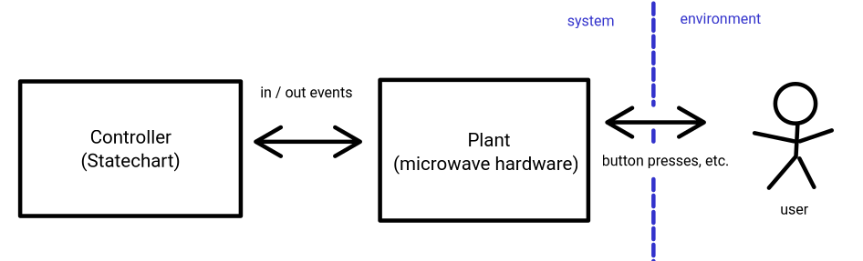
The set of input / output events is of particular interest to you, because it is the Statechart's only means of communicating with the plant:
startButton(pressed: bool)indicates that the START-button was pressed (True) or released (False)stopButton(pressed: bool)indicates that the STOP-button was pressed (True) or released (False)incTimeButton(pressed: bool)indicates that the INCTIME-button was pressed (True) or released (False)doorOpen(open: bool)incidates that the state of the door (open/closed) changed
setMagnetron(on: bool)to turn the magnetron (= the thing that creates the radiation) on/offringBellto make the 'ping' sound (e.g., when the heating is finished)setTimeDisplay(value: number)sets the number shown on the display
Note that an event indicates a change: a button event will only be received when the state of the button changes. It is not a variable that you can query at all times.
1.3 Running a simulation
The team proudly shows you what they achieved so far: LINK TO MODEL
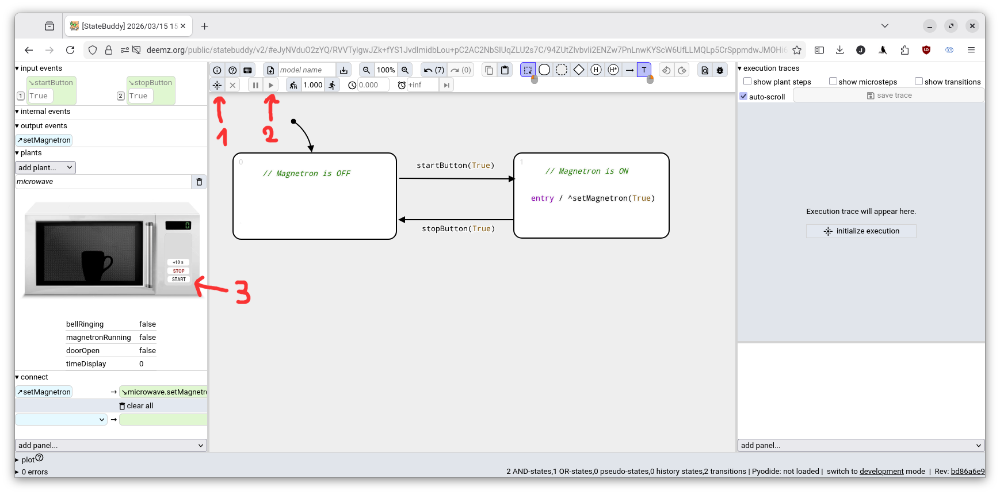
The team demonstrates that they managed to make the magnetron turn on if the START-button is pressed.
The steps (in order) are:
- Initialize execution
- (un)pause (i.e., run in real-time)
- Press the START-button
Try this!
Explanation: When the START-button is pressed, the input event startButton(True) is sent to the Statechart, enabling the transition from its initial state (OFF) to the ON-state with label startButton(True). The transition will fire (because there are no other enabled transitions), leaving the OFF-state and entering the ON-state. When entering the ON-state, the Statechart raises the output event setMagnetron, and the event has a parameter True.
1.4 Editing the model to fix a mistake
Now the team tells you about a problem they're having: pressing the STOP-button changes the active state of the Statechart to OFF (as expected), but the magnetron is not turning off!
Task 1: Make the magetron switch off when the STOP-button is pressed.
See the
Solution 1 (poor)
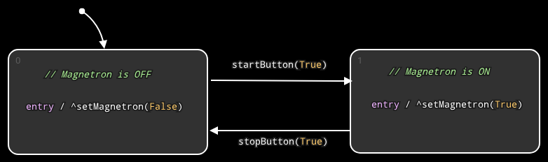
Although it is correct, this is a poor solution: to turn the magnetron off, we must go specifically via the OFF-state. Currently this is not a problem, but it may become one as the model grows.
Solution 2 (good)
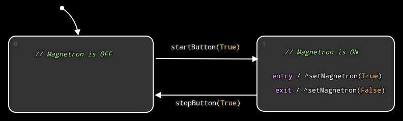
This solution is better, because we cannot leave the ON-state without turning the magnetron off.
1.5 Implementing a new feature
Everyone is feeling relieved that the START- and STOP-buttons are finally working. Suddenly, your boss, Mr. Tanaka, calls you into his office, and briefs you about a much more serious problem: the company is in big trouble for not complying with government safety regulations.
The safety regulations mandate the magnetron to be always off whenever the microwave door is open. Mr. Tanaka refuses to bribe the government inspector, so he is asking you to implement it.
(your boss)
You first verify that this is indeed a problem. Start the simulation, and start the magnetron like before, and try to open the door by clicking on it.
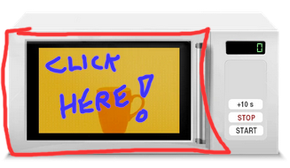
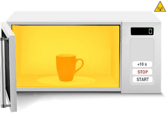
Yikes! This will violate the regulations for sure!
Now, you can save the execution trace by (1) clicking on the "save trace" button, and (2) giving the trace a name:
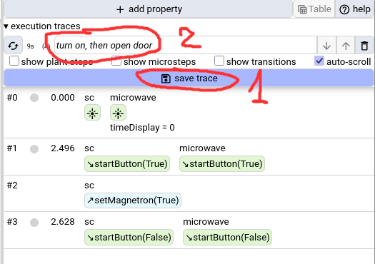
This allows you to revisit this execution trace later. For instance, you can refresh the page (F5) and your saved execution trace will still be there. If you click the "replay trace" button , the saved execution trace will be restored.
When saving a trace, only the input events (and the times when they occured) are saved. This is enough information to restore a full trace!
1.5.1 MTL property checking
Before we start implementing the correct behavior, we first formally capture the safety requirement as an MTL property.
Task 2: Write an MTL property that says "whenever the door is open, the magnetron must be off".
You may assume that the following signals exist:
microwave_doorOpenmicrowave_magnetronRunning
When you're done, you can add the property into StateBuddy. Click "add property":
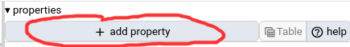
And type the property into the text box:
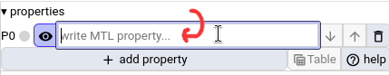
The property-indicator should turn red if ever the door is open and the magnetron is on.
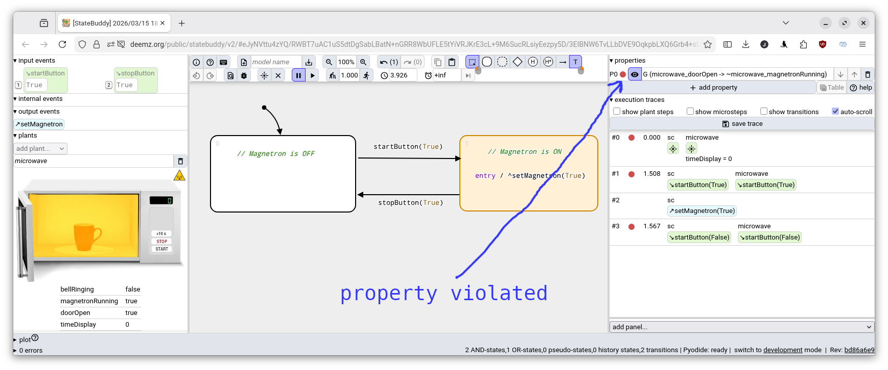
Solution
There are many ways of writing this property, but probably the easiest ones are:G (microwave_doorOpen -> ~microwave_magnetronRunning)
or
G ~(microwave_doorOpen & microwave_magnetronRunning)
1.5.2 Implementation
Now we start implementing.Task 3: Whenever the microwave door is open, the magnetron must be off! Implement this behavior!
Tip
This means two things:
(1) if the magnetron is on, and the door is opened, it must switch itself off.
(2) if the door is open, and the START-button is pressed, nothing can happen.
Wrong solution 1
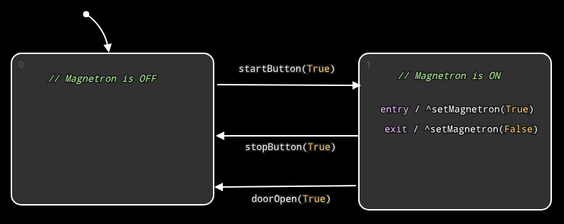
Good: The magnetron shuts off when the door is opened.Bad: Can still start the magnetron after opening the door!
Wrong solution 2
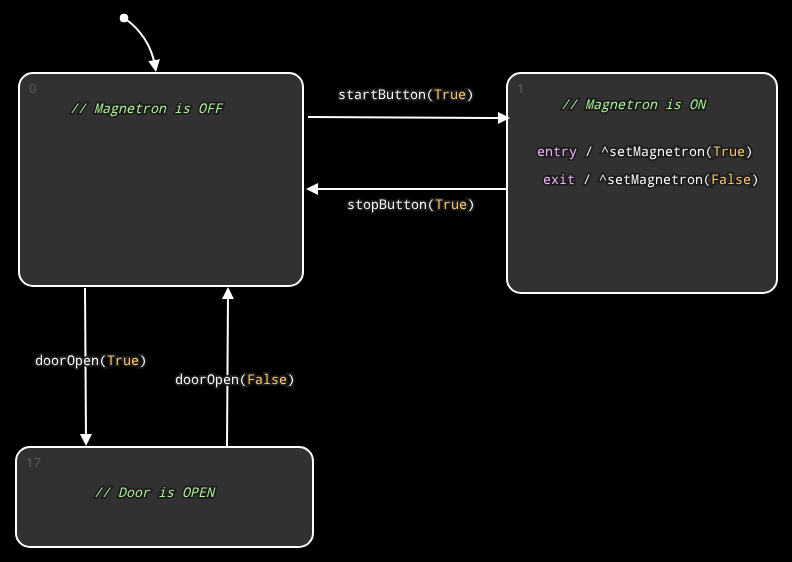
Good: Cannot start the magnetron after opening the door.Bad: The magnetron doesn't shut off when the door is opened!
Tip
Use hierarchical states!
Solution 1 (poor)
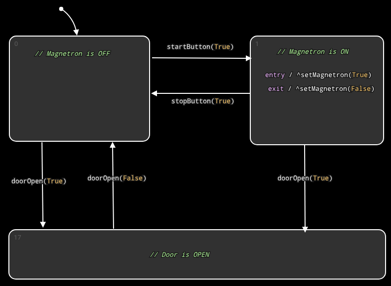
Good: Safe behavior.Meh: Duplicated transition to catch doorOpen...
Solution 2 (good)
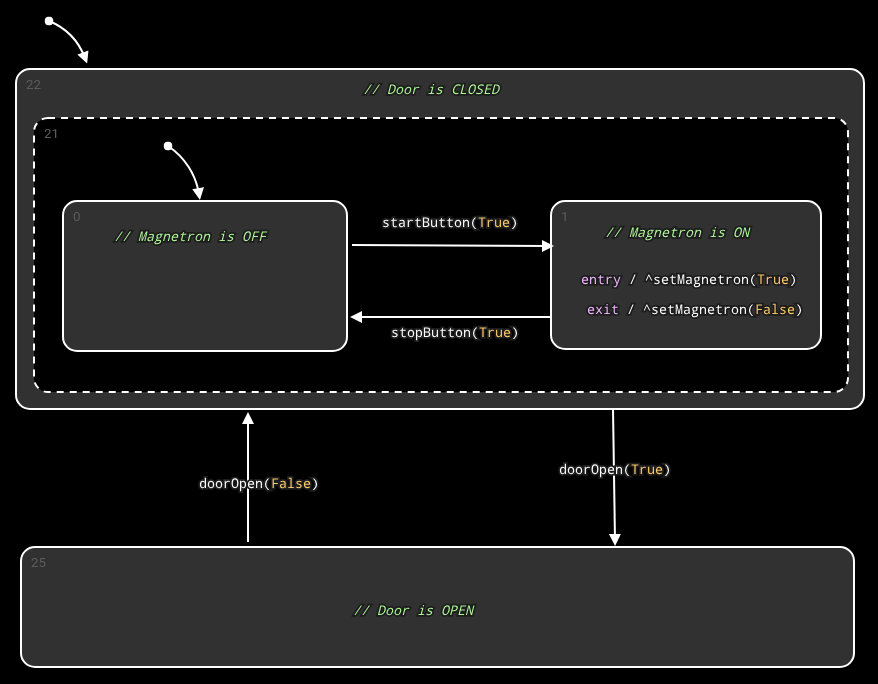
Good: Safe behavior.Good: No duplication, easy to comprehend.
Note: an AND-state with only one child can be ommitted, for an even better solution:
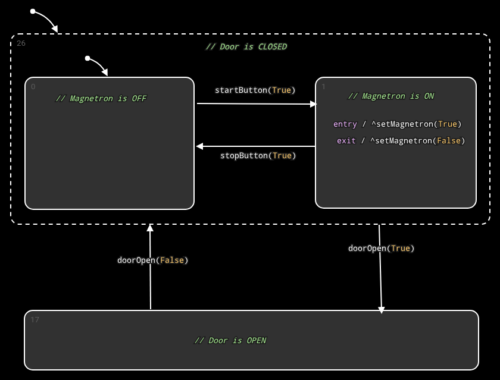
1.6 Epilogue
The boss pats you on the shoulder, and you feel happy, having saved the day at PARASONIC. The ParaWave T-9000 turns out to be a huge commercial success.
2. Assignment — Gantry Crane Controller
2.1 Introduction
Similar to the tutorial, you will again create a software controller for a physical plant. The plant is a gantry crane, that picks up and drops off containers.
The crane can move horizontally ("move") and vertically ("hoist"), and it has an electromagnet that can be turned on/off to pickup/drop-off containers.
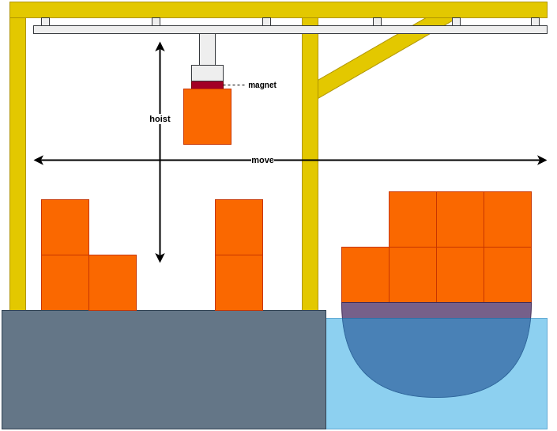
2.2 System overview
Unlike the tutorial, the Statechart now interacts with multiple components (not a single plant):
- Scheduler: Determines in what order and where to pickup/drop-off containers
- Crane Control: Controls the motors of the crane. Given a position, the crane control can make the crane move to that position.
- Emergency Panel: A panel with two buttons: STOP and RESUME. In case of emergency, the STOP button will temporarily stop all crane movement.
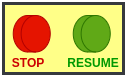
In the following figure, the in/out events received/sent by the Statechart are visible:
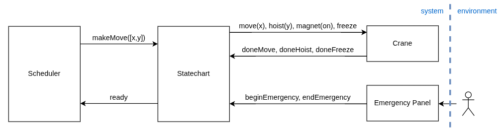
2.3 Interfaces
For interaction with each of the components, a fixed interface is provided. This interface is already implemented in the starting point Statechart file.
2.3.1 Scheduler
| In/Out | Event | Parameter Type | Meaning |
|---|---|---|---|
| out | ready |
- | Statechart tells the scheduler that it is ready to make its next move. |
| in | makeMove |
[number, number] |
The scheduler tells the Statechart to start making its next move. The parameter is a tuple (array) containing the x- and y-coordinates of the target position. |
2.3.2 Crane Control
| In/Out | Event | Parameter | Meaning |
|---|---|---|---|
| out | move |
number |
Make the crane move horizontally to given (via parameter) position. |
| out | hoist |
number |
Make the crane move vertically to given (via parameter) altitude. |
| out | freeze |
- | If the crane is currently moving, make it stop its movement until standstill. |
| in | doneMove |
- | Indicates to the Statechart that the requested move is complete. |
| in | doneHoist |
- | Indicates to the Statechart that the requested hoist is complete. |
| in | doneFreeze |
- | Indicates to the Statechart that the requested freeze is complete. |
| out | magnet |
boolean |
Turns the magnet on/off (parameter True = on) |
2.3.3 Emergency Button
| In/Out | Event | Parameter | Meaning |
|---|---|---|---|
| in | beginEmergency |
- | Indicates to the Statechart that the emergency STOP-button is pressed. |
| in | endEmergency |
- | Indicates to the Statechart that the emergency RESUME-button is pressed. |
2.4 Definitions
2.5 Behavioral Requirements
- Initially, you may assume the magnet is off, the crane is at a safe altitude, and not moving in any direction.
- Immediately at startup, the Statechart will raise the output event
ready to indicate that it can make its first set of moves.
- After raising
ready, the Statechart remains idle, waiting for the Scheduler to instruct it with the next move.
- The next move is instructed by the Scheduler by raising the
makeMove event. A move always consists of the following sequence:
- Start moving horizontally to the horizontal target position.
- When this horizontal movement is complete, the Statechart should wait 500 ms before proceeding.
- Then, start moving vertically downwards to the vertical target position.
- When the vertical movement has complete, again, the Statechart should wait 500 ms before proceeding.
- The magnet is toggled (meaning: if the magnet was off, it is turned on, or if it was on, it is turned off).
- Wait another 500 ms.
- The crane starts moving vertically upwards, to the safe altitude.
- After the vertical movement has completed, we wait yet another 500 ms.
- The Statechart raises the
ready output event to indicate that it is ready for the next move.
- While making a move, the Statechart must ignore
makeMove events. We can only make one move at a time!
- An emergency stop can always be made (whether the crane is idle or not). During an emergency stop, the crane stops responding to all input events, except those of the emergency panel.
- An emergency stop consists of the following sequence:
- The emergency STOP-button is pressed.
- In response, the Statechart immediately requests the Crane Controller to stop all movement.
- After the crane has come to a standstill, the Statechart can respond to an emergency RESUME-button press.
- If the RESUME-button is pressed, the Statechart waits 2 seconds before resuming normal behavior...
- If in this 2-second period, the STOP-button is pressed again, the resuming is canceled, and Statechart stays in emergency mode until the RESUME-button is pressed again, starting the 2-second period again.
- When the 2-second period is over, the activity that was happening when the emergency stop started, is resumed. For instance, if the crane was moving horizontally to pick up a container, it resumes this movement as if nothing happened, followed by the rest of the move (go down, toggle magnet, go up).
2.6 Examples of behavior
TODO: add behavior traces...
2.7 Testing your solution
2.8 What is expected
Try to use as many Statechart features as possible. Try to avoid duplicated behavior.
ready to indicate that it can make its first set of moves.ready, the Statechart remains idle, waiting for the Scheduler to instruct it with the next move.
makeMove event. A move always consists of the following sequence:
- Start moving horizontally to the horizontal target position.
- When this horizontal movement is complete, the Statechart should wait 500 ms before proceeding.
- Then, start moving vertically downwards to the vertical target position.
- When the vertical movement has complete, again, the Statechart should wait 500 ms before proceeding.
- The magnet is toggled (meaning: if the magnet was off, it is turned on, or if it was on, it is turned off).
- Wait another 500 ms.
- The crane starts moving vertically upwards, to the safe altitude.
- After the vertical movement has completed, we wait yet another 500 ms.
- The Statechart raises the
readyoutput event to indicate that it is ready for the next move.
makeMove events. We can only make one move at a time!
- The emergency STOP-button is pressed.
- In response, the Statechart immediately requests the Crane Controller to stop all movement.
- After the crane has come to a standstill, the Statechart can respond to an emergency RESUME-button press.
- If the RESUME-button is pressed, the Statechart waits 2 seconds before resuming normal behavior...
- If in this 2-second period, the STOP-button is pressed again, the resuming is canceled, and Statechart stays in emergency mode until the RESUME-button is pressed again, starting the 2-second period again.
- When the 2-second period is over, the activity that was happening when the emergency stop started, is resumed. For instance, if the crane was moving horizontally to pick up a container, it resumes this movement as if nothing happened, followed by the rest of the move (go down, toggle magnet, go up).
2.7 Testing your solution
2.8 What is expected
Try to use as many Statechart features as possible. Try to avoid duplicated behavior.To give you an indication of the complexity, my own solution consists of:
- 16 AND-states
- 7 OR-states
- 0 pseudo-states
- 1 history states
- 16 transitions
2.9 Getting started
The starting point of the assignment can be found HERE.
To configure MQTT, you must fill in a correct:
- username and password
- global prefix